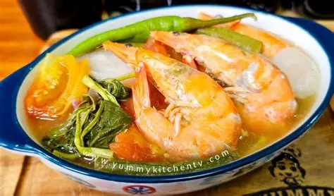

Tatak Pinoy
Sinigang na Hipon
A Filipino sour soup made with shrimp,and tamarind broth, full of vegetables and savory flavors.
Ingredients
- 500g shrimp, cleaned
- 1 pack tamarind soup base or fresh tamarind
- 1 medium onion, quartered
- 2 tomatoes, quartered
- 1 radish, sliced
- 1 cup string beans
- 1 eggplant, sliced
- 2 liters water
- Fish sauce and salt to taste
Cooking Procedure
- Boil water, onions, and tomatoes until tender.
- Add tamarind base, stir well.
- Add radish, string beans, and eggplant. Cook until veggies are soft.
- Add shrimp and cook until pink.
- Season with fish sauce and salt. Serve hot.